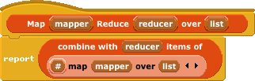
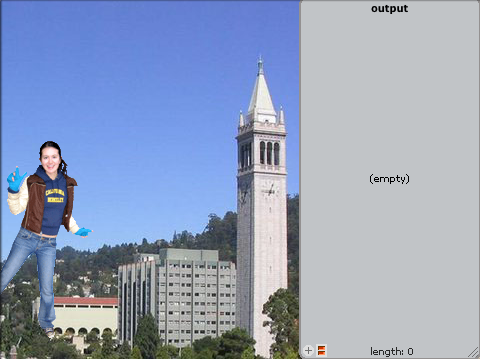
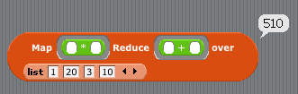
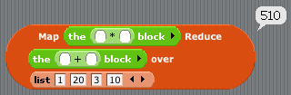
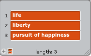
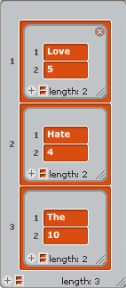

Distributed Computing
Learning Goals
- Digital devices, systems, and the networks that interconnect them enable and foster computational approaches to solving problems. (this is from AP's big ideas section VI)
- MapReduce is a particularly nice example of a distributed computing pattern, and the facility to write (and debug, and test, and evaluate) programs in our simplified MapReduce abstraction.
MapReduce Distributed Computing Pattern
- Distributed computing is a field where many computers (often geographically remote) are used to solve a single problem.
- As you can imagine, the mechanisms of this are quite complicated, and traditionally, distributed programming has been difficult (at least compared to programming on a single computer with one core).
- The scientific community cares deeply about this issue, because they often have very large computations that can only be done in a distributed way (e.g., simulating climate change). Very early distibuted computing applications were all scientific in nature.
- More recently, every field has large datasets and compute jobs, from entertainment (Pixar rendering a frame from their latest movie) to medicine (protein folding) to finance (running simulations of a new purchasing strategy on all historic stock exchange data) to artificial intellgence (solving checkers) to business (Google needing to crawl and index and search the web).
- Languages and tools and abstractions have improved greatly for distributed computations.
- At the end of the day, Amdahl's law tells us that in the perfect world, if we distribute the problem across N machines, we can solve the problem N times faster, but it's going to be hard to get that level of speedup because of serial fraction of code. Still, if N is on the order of a million and coders make every effort to reduce the serial fraction, that's a pretty fast system!
- There are common patterns that have emerged (i.e., the best ways) to approach problems with computational resources which might be geographically distant.
- One of these is MapReduce, which has emerged as one remarkable abstraction for dealing with the difficulties of distributed computing.
- Researchers at Google wrote the seminal paper on it, and they use it extensively to take advantage of
their massive datacenters to help them with their massive data needs. In our simplifaction of the
process...
- There is a Map phase where (sometimes very big) data is broken up into pieces and sent to machines with mapping function. Sometimes the mapping function is the identity (i.e., do nothing) function; take what is sent in and return it. The output of the mapper is the same as the input of the reducers. In our simplying abstraction, the mapping happens over a list of elements, which can be of any type (word, sentence, list, procedure, etc).
- There is a Reduce phase where all the results of the mappers are combined into one by a reducing function, which takes two adjacent pairs and replaces those with the reduction, and this process continues until there's only one element left.
- Note that the outputs of reductions are sent as input to other reducers, so in our simplifying abstraction, there are only two data types:
- The data type used in the list of input to the mappers. In the tables below, the Input is a list of this type. (E.g., if it's a number, then the input to the MapReduce is a list of numbers.)
- The data type that is the output of the reducers, shown as Output below, because it's reported value of the entire MapReduce process. In this simplified model, this type is the same as the output of the mappers, which is the same as the input to the reducers.
- Another way to think about it -- what if the original list were of length 1? The mapper would do its job, and return something. But, since it's the only mapper needed, its output has to match the desired output of the MapReduce call, so every mapper always has to return the same output (type, formatting, etc) as is desired (from the result of the reducing phase).
- Here's the most important part of this, so read the following over a few times so you understand: Thanks to Abstraction, running a MapReduce on your computer should be indistinguishable from running MapReduce on a cluster of a million computers (except hopefully the latter is faster). You shouldn't need to worry about that when you're writing your MapReduce code. So, for this lab, we're going to make sure you understand how to write MapReduce programs for one computer, and later when BYOB allows us to easily support automated, distributed computing, the internals of MapReduce will change to send your program to a cluster, but your programs won't have to!
- How does it work? It's exactly as we describe; we send the results of mapping over a list to a reducer (block
interface and definition shown below).

Let's start solving problems with MapReduce!
To get started, load up our finished project, MapReduce.ypr. Your screen should look like this:

Now, click the green flag to get started and initialize the system. After that, you can type any number 1-5 to run one of the five MapReduces below, and 'r' to reset to the initial state. We've given you all the answers, so you can see and understand what the problem is asking you to do and what the expected output is.
By the way, the word Domain means 'input', and the word Range means 'output'.
Your first MapReduce : a simple sum-of-squares (we did it for you)
- We're going to start by showing you how we do a really easy one, and work up to some hard ones. This problem involves finding the sum of squares of some numbers. E.g., 12 + 202 + 32 + 102 = 510 (nice area code, eh?)
| Problem |
Input |
Map Domain |
Map Range |
Map Function |
Binary reducer function |
Output |
| A sum of squares of numbers |
numbers, each one a different list element |
number |
number |
square |
+ |
a single number |
...and here's what it looks like when we do it:

Let's note a couple things:
- First of all, both mapper and reducer are reporter blocks, so we need to wrap them in grey borders so they pass in the functions themselves as data, not the results of calling multiply and addition on two empty inputs (i.e., 0). We prefer this abbreviated style, but we could also have used the blocks and NOT used the gray borders like this (this should be review for you, btw).

- The mapper should take a single number as input, but what we've used for simplicity is just the block, which has two inputs. You also recall that BYOB, given a function of two inputs but with only one input (each element in Map's input list in this case) will just copy the input to all the fields, making it a nice, effective square procedure.
- As we go through more detailed examples, we're going to want to write a mapper and reducer funtions as separate and defined blocks, so for good code management, we're going to define a sprite per MapReduce problem, each of which has a and , with the answers already filled in. Once you understand what the problem is, first edit the block, delete its body, and see if you can recreate it. Once you've got a working , do the same with the . That way, you'll always have a working system. Note that we've written a lot of helper functions to make your life easier. Feel free to use the
Scripts area of each sprite for debugging. When you're done with each of these, compare your answer with ours.
Your second MapReduce : Alpha, the first word in the dictionary
We're going to start easy and tell you how to write your mapper and reducer. In fact, this problem is so easy, it just requires you to write the reducer, since the mapper is the same as the identity ! (I.e., the mapper just passes its input through, untouched, and the reducer has to do all the work!). Fill in the body for the and for the Alpha sprite and test it.
| Problem |
Input |
Map Domain |
Map Range |
Map Function |
Binary reducer function |
Output |
| The first word in the dictionary in all of Shakespeare's works |
All of Shakespeare's works, each word a different list element |
word |
word |
identity |
Take two words and return the earlier word in the dictionary |
a single word |
Quiz: what kind of pattern was Alpha?
From 10 miles up, what kind of pattern was that entire MapReduce operation? (answer at the end)
- mapping
- finding
- counting
- filtering
- testing
- combining
Your third MapReduce : Love, All the Beatles song titles with the word "love" in it
Hopefully that last one wasn't too bad. This one is a little harder because you have to write both the
mapper and reducer. The idea is you've got a huge set of data and you need to keep only the ones that match.
Fill in the body for the and for the Love sprite and test it.
| Problem |
Input |
Map Domain |
Map Range |
Map Function |
Binary reducer function |
Output |
| All the Beatles song titles with the word "love" in it. This is effectively a "filter" operation, removing all the list elements that don't match. |
All of the Beatles song titles, each song title a different list element |
Song title (sentence) |
a list of the song title; or an empty list |
Look for the word "love" in the title, if it's there, return title as a one-element list, otherwise return the empty list |
Merge all the lists together that the mappers (and other reducers) return into one big list |
Same form as the input: a list of song titles, except each one has the word "love" in it. |
Quiz: what kind of pattern was Love?
From 10 miles up, what kind of pattern was that entire MapReduce operation? (answer at the end)
- mapping
- finding
- counting
- filtering
- testing
- combining
Your fourth MapReduce : WordCount, a count of the number of times words appears
This one is quite a bit harder because of all the list manipulation. The idea is you've got a huge corpus of data and you want to count all the times words appear. Fill in the body for the and for the WordCount sprite and test it.
A quick aside on writing lists on paper...
Remember the Midterm handout "Writing Scratch/BYOB code on Paper"? Well, we're going to add something to it. When you want to write a list of things, write them with an open parenthesis, then the first item, second item, etc (separated by spaces) and when you're done, put a closed parenthesis. If any of your items are a sentence, you have to put quotes around the sentence. So, for example, the list of three things:

...would be written as the equivalent 3-element-list: (life liberty "pursuit of happiness"). Similarly, a nested list just shows up as a nested set of parenthesis. E.g.,

...would be written as ((Love 5) (Hate 4) (The 10)). We mention this because we've used this short-cut below. Now, on to the problem.
| Problem |
Input |
Map Domain |
Map Range |
Map Function |
Binary reducer function |
Output |
For every word in Shakespeare's works, the number of times it occurs. E.g., ((Love 123) (Hate 4) (the 25231) etc) |
All of Shakespeare's works, each word a different list element |
word |
A list of a list of two elements, the word and 1. This is the same as the format of the final mapreduce output if shakespeare would have only written one word. E.g., ((Love 1)) |
Make a list of a list of the input word and the number 1 |
Take two lists of words and their counts and merge them. E.g., ((Hate 4) (Love 3)) and ((Love 2) (The 10)) merge to ((Love 5) (Hate 4) (The 10)) |
a single list of lists, with each inner list a unique word and its count |
Here are some tips on how to get started with WordCount:
- Start with the
mapper as always.
- We've provided the
MakeWordCount, GetCount-from-WordCount, and GetWord-from-WordCount helpers. Use them as needed.
- When writing your
reducer, think about the general case of combining two lists as in the example above. Hate is only in the first list. The is only in the second list. Love is in both lists. How do you merge these two lists?
- We found it useful to write the helper
GetCount-of-Word-()-from-List ... feel free to use this when writing reducer, but make sure you could write this on your own too.
Extra for Experts : the fifth MapReduce ... Google, building a Google-like index
The idea here is you've got a huge set of webpages (URLs) and webpage-content and you want to create a huge table indexed by each word that shows you what URL the word is in. Fill in the body for the and for the Google sprite and test it. Hint: This problem is very similar to WordCount.
| Problem |
Input |
Map Domain |
Map Range |
Map Function |
Binary reducer function |
Output |
| Google simulation! Given web pages (URLs) and data, create a massive reverse-lookup-table, that allows us to quickly query, given any single word, what webpages it was on. |
The input is a list of lists. The first element in each inner list is the web page address, the second element is the content of the webpage |
Two-element list, the web page address and the text of the web page |
A list of lists, where the inner list has the word as the first element and all the URLs that have the word as followup elements. E.g., if the input were: ("hamlet" "to be or not to be"), the output would be ((to hamlet) (be hamlet) (or hamlet) (not hamlet)) |
For every unique word in the webpage, make a list of the word and the URL. Return a list of all these pairs. |
Take two lists of words and their counts and merge them. E.g., Given ((to hamlet) (be hamlet) (or hamlet) (not hamlet)) and ((to webster) (wit webster)), it would return ((to hamlet webster) (be hamlet) (or hamlet) (not hamlet) (wit webster)) |
a single list of lists, with each inner list a unique word as the first element and the URLs that contain the word as the following elements. |
Answers to the quizzes:
- Alpha is a finding pattern
- Love is a filtering pattern